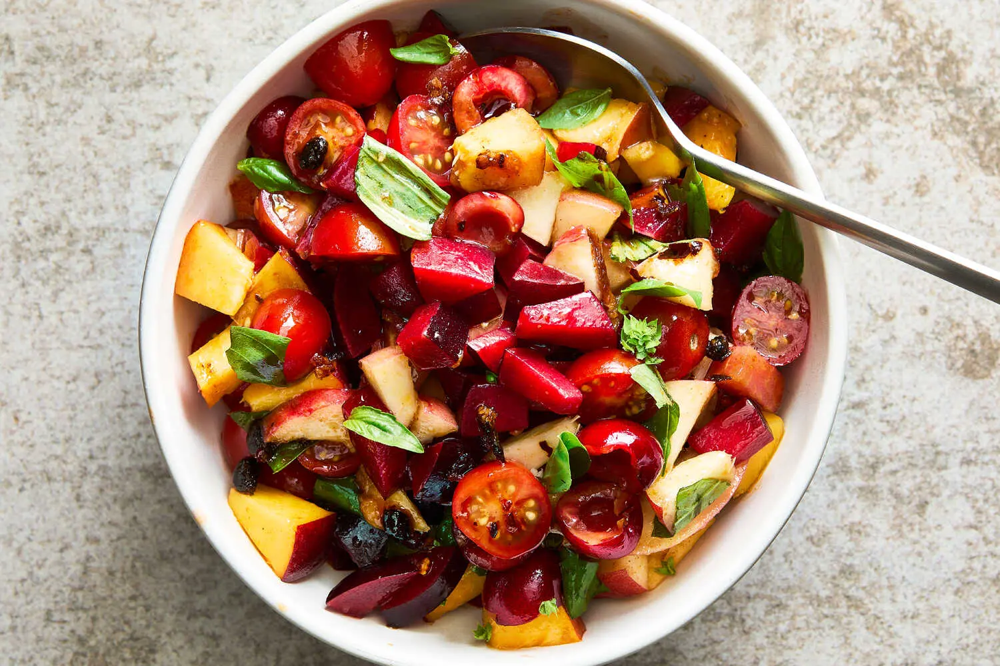

Sweet and Spicy Summer Fruit Salad

Description
Some of summer’s most notable offerings are stone fruit, tomatoes and basil. While they thrive
in the sun, they gain even more flavor when dressed in a savory-spicy vinaigrette. In this
spoonable salad, the components resemble a fragmented mosaic: Sweet stone fruit of any kind,
from cherries to peaches to pluots, is cut small and tossed with juicy cherry tomatoes and aromatic
basil in a chile crisp vinaigrette. The vinaigrette is simple to make, only requiring a bit of sugar
to build on the fruit's natural quality, along with red wine vinegar to add fruity depth.
Recipe
Equipment
Ingredients
- 2 tablespoons mild-tasting olive oil
- 1 1/2 tablespoons store-bought or homemade chile crisp
- 1 tablespoon red wine vinegar
- 1 tablespoon sugar
- 1 1/2 pounds stone fruit, such as plums, pluots, cherries,
nectarines or peaches, or a combination
- 10 ounces cherry tomatos
- salt, to taste
- 3/4 cup basil leaves, lightly packed
Steps
-
In a large bowl, whisk together the oil, chile crisp, vinegar and sugar.
-
Pit the stone fruit and cut the larger fruit into ½-inch wedges, then cut each wedge
into ½-inch pieces. Halve the cherries, if using. Place the fruit in the vinaigrette
bowl. Cut the tomatoes in half, add to the bowl, season with salt and toss very well.
Taste and adjust vinaigrette seasonings as desired. (This salad can be made up to a
day ahead and stored in an airtight container in the fridge.)
-
Prepare for baking: Arrange a rack in the center of the oven and preheat to 425℉/218℃.
Meanwhile, remove the chicken from the fridge. Remove the chicken from the bag, and set
it over the bowl (or baking sheet) to drip off any excess buttermilk. Use your hands to
"squeegee" and remove as much buttermilk as possible.
Transfer chicken to a large (10-inch+) cast-iron skillet breast-side up. Truss and tie
the legs together with kitchen twine, and allow to sit at room temperature for 1 hour
before baking. If desired, grind some freshly ground black pepper over the top of the
chicken.
Note: For even crispier skin, use a paper towel to pat the skin dry.
-
Bake: Place the pan all the way in the back of the oven such that the legs are pointing
toward the rear left corner and the breast is pointing towards the center of the oven.
Once the chicken begins to sizzle and brown, after about 20 minutes, reduce the heat
to 400℉/204℃. Bake for an additional 10 minutes.
Rotate the pan so that the legs are pointing towards the rear right corner, and
continue baking until the chicken is fully browned and cooked through, about 30
more minutes.
Note: When roasting a whole chicken, the breast tends to overcook before the legs
finish cooking through. The back of the oven tends to be the hottest, so pointing
the legs towards the hotter areas and keeping the breast in the center allows the
chicken to cook through more evenly.
-
Rest: Remove the chicken from the oven and allow it to rest for 10 – 15 minutes
before carving into pieces. Serve warm with the pan juices, and enjoy.
Nutrition
Calories: 362kcal | Carbohydrates: 4g | Protein: 30g | Fat: 25g | Saturated Fat: 8g |
Polyunsaturated Fat: 5g | Monounsaturated Fat: 10g | Trans Fat: 0.1g | Cholesterol: 118mg |
Sodium: 2898mg | Potassium: 383mg | Sugar: 4g | Vitamin A: 335IU | Vitamin C: 2mg |
Calcium: 110mg | Iron: 1mg
Home